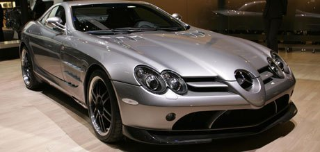
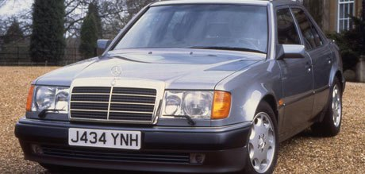
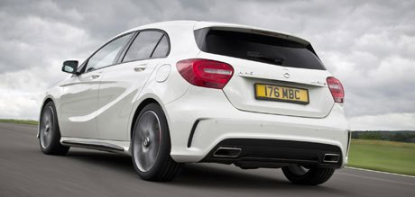

Quiz: How much do you know about Mercedes? Name Email Your gander Male Female Other This special edition version of the SLR McLaren was called the 722. But why? It celebrated the 722 miles an SLR managed to achieve in just six hours in an endurance challenge at Talladega, in the USA. It celebrated the 1955 Mille Miglia-winning 300SLR that was driven by Sir Stirling Moss; 722 was its racing number. It celebrated a total of 722 Formula One races competed by Mercedes-Benz in 60 years of competition.  The W124 model was extremely popular, and a real success for Mercedes-Benz. But how many different body styles could buyers choose from? 2 3 4  With 357bhp, the A45 AMG is one of the most ballistic hot hatches money can buy. But what size is its engine? 2.0 litres 2.2 litres 2.5 litres 